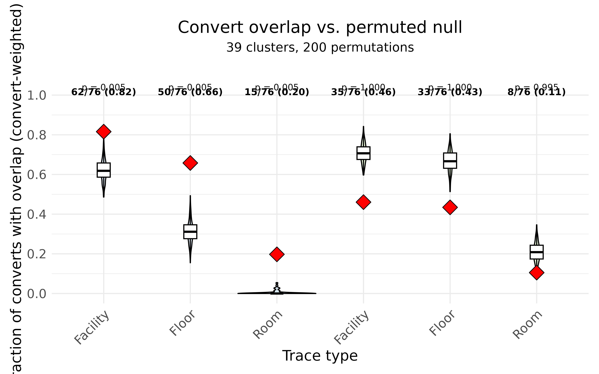

Epidemiological overlap analysis
Source:vignettes/articles/overlap_analysis.Rmd
overlap_analysis.RmdA genomic cluster tells us that a group of isolates are closely
related, but on its own it does not say how the organism moved
between the patients in that cluster. hospitraceR answers
that question by layering the patients’ movements through the facility
on top of the genomic clusters: it asks whether the patients in a
cluster were in the same place at overlapping times, and uses that to
categorize the likely transmission route. This article walks through
that workflow, from a single isolate lookup table to a permutation test
of whether the observed overlap exceeds chance.
We start, as in the introductory
article, by clustering the example isolates with the threshold-free
shared-variant method of Hawken et al.
(2022). Visualization is provided by the companion package hospitraceRVisualize.
library(hospitraceR)
library(hospitraceRVisualize)
library(ape)
library(ggplot2)
# An example dataset of isolates and their patient epidemiological metadata.
extdata_dir <- file.path("..", "..", "inst", "extdata")
load(file.path(extdata_dir, "example.RData"))
dna_aln <- read.dna(file.path(extdata_dir, "example.fasta"), format = "fasta")
# Keep isolates whose patients appear in the location traces, then the variable sites
dna_aln <- dna_aln[dna_pt_labels[labels(dna_aln)] %in% rownames(facility_trace), ]
dna_var <- dna_aln[, apply(dna_aln, 2, function(x) sum(x == x[1]) < nrow(dna_aln))]
snp_dist <- get_snp_dist_matrix(dna_var)
tree <- get_phylo_tree(dna_var, snp_dist, "pars")
#> Final p-score 2673 after 20 nni operations
clusters <- get_tn_clusters_sv_index(
dna_var, snp_dist, adm_seqs, adm_pos_pt_seqs, dna_pt_labels, dates, tree
)The isolate lookup table
Almost every function below consumes the same table: a per-isolate
lookup that joins each isolate’s cluster to its patient, collection
date, admission status, and surveillance history.
get_isolate_lookup() builds it. The two
surveillance-derived columns are what make the epidemiological reasoning
possible:
-
prev_survis the most recent surveillance date strictly before the isolate; -
prev_surv_negisTRUEonly when the patient had a prior surveillance and none of the surveillances before this isolate were positive — a genuine previous-negative to current-positive conversion. This tells us which isolates specifically were detected as part of acquisition events.
isolate_lookup <- get_isolate_lookup(
clusters, dna_var, dna_pt_labels, adm_seqs, dates, surv_df
)
head(isolate_lookup)
#> isolate_id patient_id date cluster adm_pos prev_surv prev_surv_neg
#> 1 102 147 41 1 TRUE 41 FALSE
#> 2 105 149 59 2 TRUE 59 FALSE
#> 3 109 259 70 3 FALSE 58 TRUE
#> 4 10 129 117 4 FALSE 56 FALSE
#> 5 112 115 73 5 FALSE 56 FALSE
#> 6 114 193 82 6 TRUE 82 FALSECategorizing patients by transmission role
Within each cluster, we attempt to categorize patients based on
different roles: an index who carried the organism on
admission, converts who acquired it during their stay, weak
indices whose first surveillance was already positive, and so on.
cluster_patient_categorization() assigns each patient in
each cluster one of these roles from its admission status, surveillance
cultures, and collection dates.
flatten_cluster_patient_categorization() turns the nested
result into a tidy data frame, one row per cluster-patient pair:
patient_cats <- cluster_patient_categorization(isolate_lookup, surv_df)
patient_cat_df <- flatten_cluster_patient_categorization(patient_cats)
table(patient_cat_df$category)
#>
#> adm-pos adm-pos-convert convert
#> 31 4 81
#> index multiply-colonized-index secondary-convert
#> 67 10 12
#> weak-index
#> 4The converts are the patients we most want to explain: each one acquired the organism somewhere, and the location traces are how we look for that “somewhere”.
Overlap between isolates
The raw ingredient is the overlap between pairs of isolates.
isolate_isolate_overlap() takes the lookup and a
patient-by-date trace matrix (here facility_trace, marking
which facility each patient was in on each day) and, for every ordered
donor-recipient pair, counts the days on which the two patients were in
the same place. The window it searches runs from the donor’s previous
surveillance date up to the recipient’s collection date — the period
during which the donor could plausibly have transmitted to the recipient
before the recipient’s positive isolate was collected.
iso_overlap <- isolate_isolate_overlap(isolate_lookup, facility_trace)
head(iso_overlap)
#> iso_donor iso_recipient overlap_days
#> 1 102 105 0
#> 2 102 109 8
#> 3 102 10 1
#> 4 102 112 24
#> 5 102 114 0
#> 6 102 115 26This is concurrent overlap: the two patients were physically
co-located at the same time.
isolate_isolate_sequential_overlap() instead captures
indirect overlap, where the recipient later occupies a location
the donor had been in earlier — a possible environmental or intermediary
route. Pairs with any concurrent co-location are excluded from the
sequential count, so the two notions do not double-count the same
contact.
From isolate pairs to cluster explanations
cluster_isolate_overlap() collapses the pairwise
overlaps to the cluster level: for each isolate in a multi-patient
cluster, does any other isolate in the same cluster overlap
with it? Admission-positive isolates are reported as NA,
since they were not acquired in the facility and so need no in-facility
explanation.
cluster_overlap <- cluster_isolate_overlap(isolate_lookup, iso_overlap)categorize_cluster_overlap() then labels each cluster by
how well its conversions are explained. A cluster where the index is
admission-positive and every convert has an overlap is
patient-to-patient; one where a convert is left unexplained
is missing-intermediate; and there are further categories
for weak indices, multiply-colonized indices, and clusters that the
location data cannot account for.
flatten_cluster_overlap_categorization() tidies the
result:
overlap_cats <- categorize_cluster_overlap(isolate_lookup, cluster_overlap, surv_df)
overlap_cat_df <- flatten_cluster_overlap_categorization(overlap_cats)
table(overlap_cat_df$category)
#>
#> all-admission-positive
#> 6
#> false-negative-index
#> 2
#> inexplicable
#> 2
#> missing-intermediate
#> 7
#> missing-source
#> 2
#> multiply-colonized-index
#> 1
#> multiply-colonized-index-missing-intermediate
#> 1
#> patient-to-patient
#> 17
#> weak-index-patient-to-patient
#> 1Most multi-patient clusters fall into the explained
patient-to-patient category, which is the signal we would
expect if co-location within the facility is genuinely driving
transmission.
Convert events with overlap
To summarize a whole clustering with a single number,
fraction_convert_events_with_overlap() reduces the
cluster-level overlaps to the fraction of convert events
(previous-negative patients who then turned positive) that have an
overlap explanation. It returns the per-cluster fractions, but also
carries the per-cluster numerator (n_overlap) and
denominator (n_converts) as attributes, so that clusters
can be pooled by their number of converts rather than averaged as
equal-weight fractions:
convert_overlap <- fraction_convert_events_with_overlap(cluster_overlap, isolate_lookup)
# convert-weighted pooled fraction across all clusters
sum(attr(convert_overlap, "n_overlap")) / sum(attr(convert_overlap, "n_converts"))
#> [1] 0.8157895Is the overlap more than chance?
A high fraction is only meaningful if it is higher than we would get
by shuffling patients between clusters at random.
cluster_overlap_perm_test() runs that comparison. It
computes the observed pooled overlap fraction at facility, floor, and
room level (and their sequential variants), then repeatedly permutes the
cluster assignments — preserving the index/convert structure — and
recomputes the fraction each time to build a null distribution.
The expensive isolate-pair overlaps depend only on patient movements, not on cluster labels, so they are computed once and reused across permutations. We use a modest number of permutations here to keep the article quick; a real analysis would use more.
perm <- cluster_overlap_perm_test(
clusters, dna_var, dna_pt_labels, adm_seqs, adm_pos_pt_seqs,
dates, surv_df, facility_trace, floor_trace, room_trace,
nperm = 200, num_cores = 2
)The test returns the observed and permuted fractions, together with the numerator/denominator counts behind each. We pool those counts — across all clusters for this one dataset — into an observed fraction and a null distribution per trace type. (A real analysis would run the same test across many sequence types and pool over all of them.)
trace_types <- c("facility", "floor", "room", "seq_facility", "seq_floor", "seq_room")
nperm <- 200
# observed pooled fraction (and counts) per trace type
obs_df <- do.call(rbind, lapply(trace_types, function(tt) {
numer <- sum(perm$observed_n_overlap[[tt]], na.rm = TRUE)
denom <- sum(perm$observed_n_converts[[tt]], na.rm = TRUE)
data.frame(
trace_type = tt,
overlap_fraction = ifelse(denom > 0, numer / denom, NA_real_),
n_overlap = numer,
n_converts = denom
)
}))
# null distribution: pooled fraction per trace type, per permutation
perm_df <- do.call(rbind, lapply(seq_along(trace_types), function(j) {
fr <- vapply(seq_len(nperm), function(p) {
numer <- sum(perm$permuted_n_overlap[, j, p], na.rm = TRUE)
denom <- sum(perm$permuted_n_converts[, j, p], na.rm = TRUE)
if (denom > 0) numer / denom else NA_real_
}, numeric(1))
data.frame(trace_type = trace_types[j], overlap_fraction = fr)
}))
# one-sided p-value: how often the null meets or exceeds the observed fraction
pvals <- vapply(seq_along(trace_types), function(j) {
null_vals <- perm_df$overlap_fraction[perm_df$trace_type == trace_types[j]]
(sum(null_vals >= obs_df$overlap_fraction[j], na.rm = TRUE) + 1) / (nperm + 1)
}, numeric(1))
obs_df$p_value <- pvals
obs_df
#> trace_type overlap_fraction n_overlap n_converts p_value
#> 1 facility 0.8157895 62 76 0.004975124
#> 2 floor 0.6578947 50 76 0.004975124
#> 3 room 0.1973684 15 76 0.004975124
#> 4 seq_facility 0.4605263 35 76 1.000000000
#> 5 seq_floor 0.4342105 33 76 1.000000000
#> 6 seq_room 0.1052632 8 76 0.995024876hospitraceRVisualize::plot_overlap_perm_test() draws the
core figure: a violin of the null distribution for each trace type, with
the observed fraction as a red diamond and the observed counts labelled
above. It expects the trace type to be a factor whose levels set the
x-axis order, shared between the two data frames:
perm_df$trace_type <- factor(perm_df$trace_type, levels = trace_types)
obs_df$trace_type <- factor(obs_df$trace_type, levels = trace_types)
# annotate each trace type with its permutation p-value
annot <- data.frame(
trace_type = obs_df$trace_type,
label = sprintf("p = %.3f", obs_df$p_value),
y = 1.04
)
plot_overlap_perm_test(
perm_df, obs_df,
title = "Convert overlap vs. permuted null",
subtitle = sprintf("%d clusters, %d permutations", length(perm$valid_clusters), nperm)
) +
geom_text(data = annot, aes(x = trace_type, y = y, label = label), size = 3, inherit.aes = FALSE)
The pattern is clear and biologically sensible. The concurrent co-location fractions (facility, floor, room) sit well above their null distributions: converts really were co-located with a plausible donor far more often than random cluster assignment would produce. The sequential (indirect) fractions, by contrast, fall within or below their nulls, so once direct co-location is accounted for, indirect location sharing adds no signal beyond chance. The facility level shows the strongest effect, as expected, since being on the same floor or in the same room implies being in the same facility.